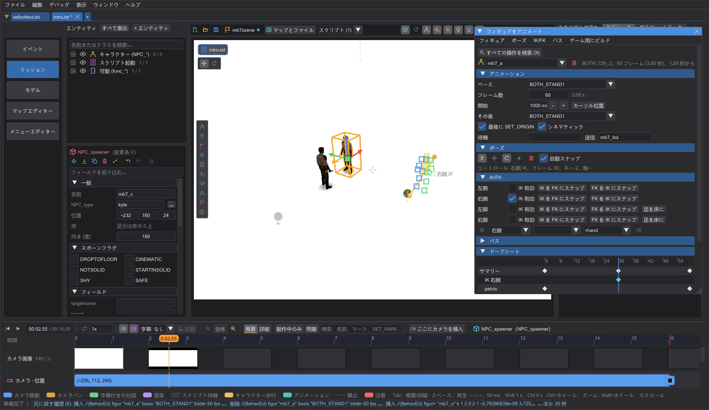
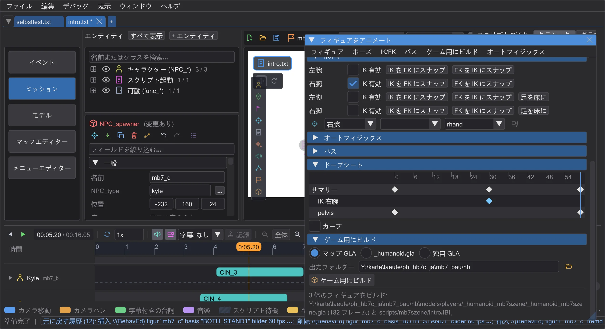
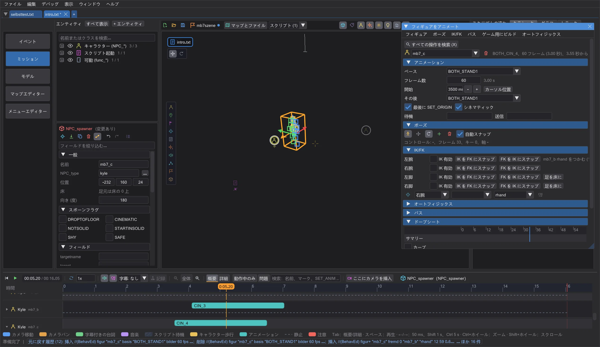

ミッションタブ: フィギュアのアニメーション
シーンのフィギュアをモデルタブと同じ操作でマップ上に直接ポーズし、骨盤の経路をその道筋にして、ゲーム用のマップ GLA・animation.cfg・ICARUS スクリプトをビルドします - 1 体でも、互いを待つ複数体でも。

1 体のフィギュア#
フィギュア (NPC_spawner) を選び、インスペクター、右クリックメニュー、またはウィンドウ フィギュアをアニメート で フィギュアをアニメート をクリックします。タイムカーソルからフィギュアに独自のアニメーションが付きます: スケルトンのベースアニメーション (ベース、例 BOTH_STAND1) の上のレイヤーで、フレーム数 フレーム、毎秒 20。コントロールリグのコントロールがマップ上のフィギュアに表示されます。3ds Max 風 (既定): Q 選択、W 移動、E 回転、F5/F6/F7 でマップの X/Y/Z に固定、K でキー。手や足の移動は IK - ターゲットがビュー平面で動きます。骨盤の移動はフィギュア全体を動かし、IK 中の肢を回すと先に飛びなく FK に切り替わります (自動スナップ)。Blender 風: G と R はモーダルで X/Y/Z、クリックで確定、Esc で中止。I でキー。足を床に は足をマップの床に、ターゲットを面に は手をクリックしたドア・コンソール・任意の面に置きます。各ドラッグは元に戻す 1 回分。ウィンドウのドープシートにはアニメーションのある各ボーンと各 IK 肢の行があり、キーをドラッグすると IK キーがチェーンの FK キーと一緒に動きます。すべての操作はウィンドウのメニュー、検索 (X、Blender 風は F3)、コントロールの右クリックにもあります。
ルートパスと SET_ORIGIN#
マップの黄色い線は全フレームにわたる骨盤の経路、つまりフィギュアの道筋です。点をドラッグするとそのフレームの骨盤が動きます。ゲームでは NPC の原点はアニメーションと一緒に動きません - Movie Duels とオリジナル JKA で測定: SET_ORIGIN がないと、次のアニメーションが始まった途端に開始位置へ戻ります。そのためフィギュアのスクリプトブロックは SET_ORIGIN (開始 + 最終フレームから その後 の最初のフレームまでの骨盤の移動) とそのアニメーションで終わり、フィギュアはその場に留まります。最後に SET_ORIGIN をオフにするとプレビューで飛びが見えます。プレビューは常にゲームが受け取るものを再生します: 変更のたびにマップ GLA をベイクし直し、ゲームと同じくスケルトンに付けます。
ゲーム用にビルド#
ゲーム用にビルド はスクリプトのアニメーション付きフィギュアをそれぞれのスロット BOTH_CIN_n (JKA 50、Movie Duels 125) にベイクし、出力フォルダーに models/players/_humanoid_<マップ>/_humanoid_<マップ>.gla、その animation.cfg、.txt と .IBI のスクリプトを書き出します。ゲームデータに既にあるマップ GLA は統合されます - そのスロットは残り、フィギュアは空きスロットを使います (満杯なら通知)。出力先 GLA はここで初めて選びます: マップ GLA (このマップのみ)、自分の Mod フォルダーの _humanoid.gla (全マップ。ゲームフォルダーには決して置かない)、または 独自 GLA。書き出す前にゲームの制限を確認します (GLA の終わりを越えるフレーム、animation.cfg のサイズ、ヘッダーの名前、53 ボーン)。問題があればビルド前に確認します。各フィギュアのスクリプトブロックは、スロット付き SET_ANIM_BOTH、長さ付き SET_ANIM_HOLDTIME_BOTH、wait、次のアニメーション付き SET_ORIGIN です。

複数のフィギュア#
各フィギュアに独自のレイヤーとスロットがあります。待機 はアニメーションの前に waitsignal、送信 は後に signal を置きます: 2 体目は 1 体目が終わった瞬間に始まり、プレビューでもゲームでも同じです。つかむ は手や足の IK ターゲットを、タイムカーソルから別のアニメーション付きフィギュアのボーンに従わせます - つかみ、受け渡し、手をつなぐ 2 体。これはつかむ側の GLA にベイクされるので、ゲームでも同じに見えます。
フィギュアの間に空間を空けてください: 別の体の中にスポーンする NPC (ボックスが重なる) はゲームに現れません。NPC_Begin は場所が空くまで 500 ms ごと (スポナーの wait) に再試行し、スクリプト開始時のその NPC への affect は誰も見つからず飛ばされます。プレビューも同じで、フィギュアはその時点で初めて現れ、そのブロックは再生されません。
